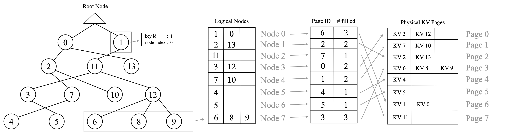
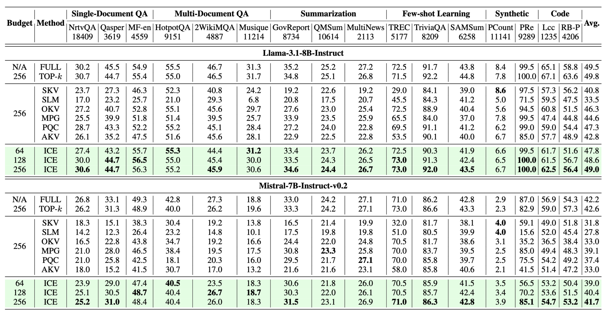
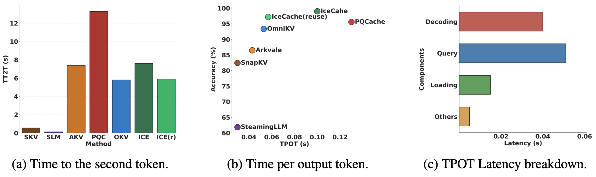

IceCache
Memory-efficient KV-cache Management for Long-Sequence LLMs
Yuzhen Mao
Simon Fraser University
Qitong Wang
Harvard University
Martin Ester
Simon Fraser University
Ke Li
Simon Fraser University
Contents

Overview
- During the prefill stage, tokens are indexed into a tree structure (the DCI-tree) according to their semantic similarity in the transformed key-embedding space. Each leaf node of the DCI-tree corresponds to a physical memory page.
- During the decoding stage, given a query q, IceCache performs a tree search to identify the top-k tokens most relevant to q. The zoomed-in section at the bottom illustrates that these critical tokens (highlighted in yellow) tend to be clustered within the same leaf nodes and are stored together in corresponding memory pages.
- After the query-aware token search, the pages (leaf nodes) containing the critical tokens are selected, and all tokens within these pages are utilized in the subsequent sparse attention with q.
Indexing and Page Selection
We Illustrate the DCI-tree below: The hierarchical structure on the left visualizes the result of indexing key embeddings where each tree node stores metadata for the tokens such as the key ID and node index. The tables on the right depict the mapping between nodes in the DCI-tree and the corresponding pages in physical memory. For each selected node, a mapping table is used to locate the memory region containing the associated key-value embeddings.
During the decoding phase, given a query, IceCache performs a head-specific page selection to identify the most relevant key pages for each attention head. Leveraging the hierarchical structure built during indexing, we apply a fast ANN search method called M-DCI, to find the top-k pages from the DCI-tree that are closest to the current query embedding for each head independently.
Page Bulk-loading
After IceCache selects important KV-pages, it aggregates all selected pages into a contiguous CPU preloading buffer. This buffer is then transferred via high-throughput PCIe transaction to a pre-allocated GPU buffer. Finally, the transferred blocks are scattered into their exact locations in the KV-Cache table. This bulk transfer avoids many small PCIe copies and significantly improves utilization.
Benchmarking LongBench
In the figure below, we present the accuracy comparison of our method (ICE) with SnapKV (SKV), SteamingLLM (SLM), OmniKV (OKV), MagicPig (MPG), PQCache (PQC), ArkVale (AKV), Full KV (FULL) and ground-truth top-k (TOP-k) on LongBench for Llama-3.1-8B-Instruct and Mistral-7B-Instruct. Additionally, we present results for IceCache incorporating the "layer-reuse" technique (reusing the same selected KV-page indices across layers). From the table, we observe that IceCache and IceCache(r) generally outperforms other methods even with only 25% of KV cache budgets.
We compare the inference latency (Time-to-the-second-toke and Time-per-output-token) of each method on LongBench. These two figures (a and b) below reveals that IceCache and IceCache(reuse) offer a strong balance between efficiency and accuracy, with the reuse variant showing how our approach can further optimize latency without significantly sacrificing performance.
We also presents a detailed breakdown of TPOT latency for IceCache at a sequence length of 36k, with a total latency of 0.11 seconds. In Figure (c), “Loading”, “Query”, and “Decoding” correspond to the overhead from CPU–GPU communication, DCI-query operations, and the overall LLM decoding process, respectively. The largest contributors to latency are the DCI-query module (0.05 s) and decoding (0.04 s), while GPU–CPU offloading and other miscellaneous operations add only 0.015 seconds and 0.005 seconds, respectively.
Benchmarking RULER
To further evaluate the performance of IceCache under extremely long-context settings, we conduct experiments on the RULER benchmark with context lengths of 150k, 200k, and 250k tokens, using a token budget of 256. The experiments are conducted using Qwen3-4B-Instruct-2507 on a single H100 GPU with 64 CPU threads enabled. As shown in the table below, IceCache and IceCache(r) consistently maintain accuracy comparable to Full-KV across all tasks and context lengths.
The figure below further demonstrates that, as the input context grows, both IceCache and its variant exhibit a substantially slower increase in per-token decoding latency than Full-KV, whose decoding cost scales sharply with sequence length. These results indicate that IceCache achieves a better accuracy–latency trade-off for extremely long-context inference, enabling scalable decoding without sacrificing accuracies on RULER benchmark.
Citation
@inproceedings{
mao2026icecache,
title={IceCache: Memory-Efficient {KV}-cache Management for Long-Sequence {LLM}s},
author={Yuzhen Mao and Qitong Wang and Martin Ester and Ke Li},
booktitle={The Fourteenth International Conference on Learning Representations},
year={2026},
url={https://openreview.net/forum?id=yHxSKM9kdr}
}